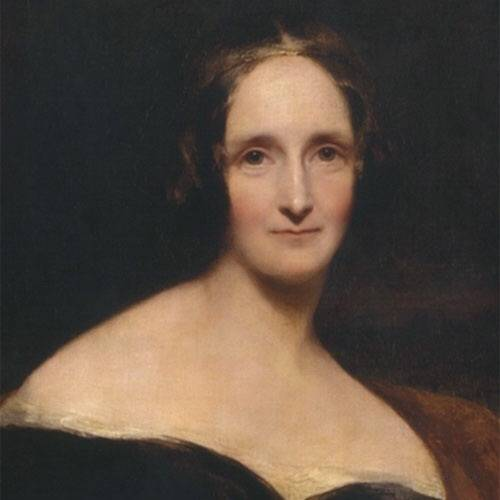
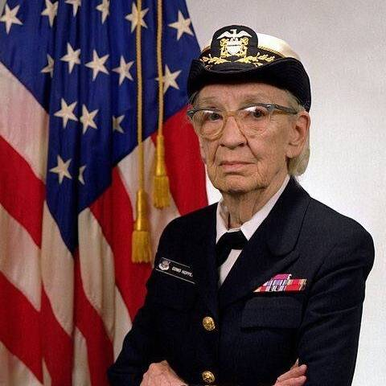
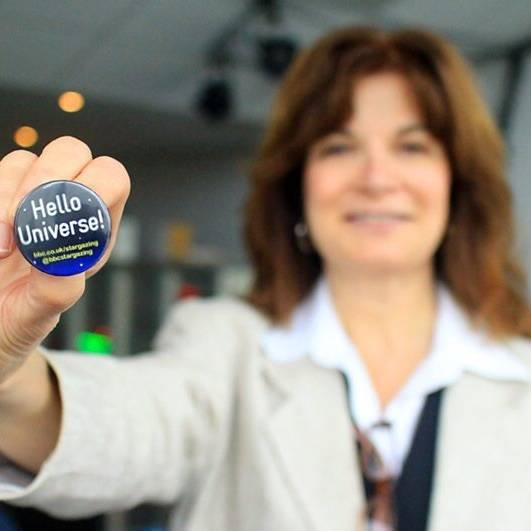
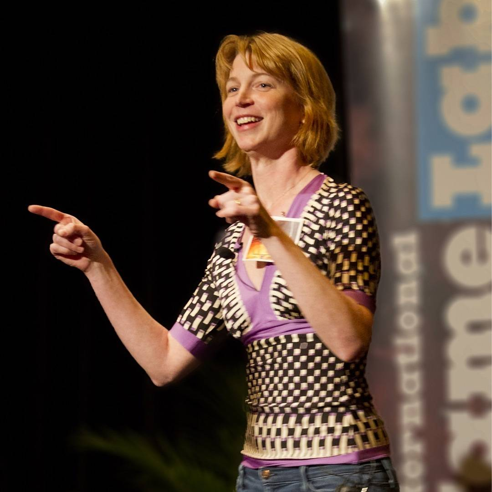
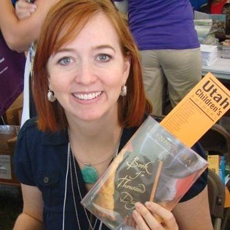

NERDY WOMEN I LOVE 🤓💃🏻
International Women’s Day you say? I too think women are neat.
-
Ada Lovelace
A visionary thinker in the early days of computation and a hero of mine that we all know way too little about. You can read about her on Wikipedia but isn't it time for a biopic?! https://en.m.wikipedia.org/wiki/Ada_Lovelace
-

Mary Shelley
A beautiful writer of thoughtful scientific (for its time) horror: 💯 The fact that she was 19 when she wrote Frankenstein: 😮
-

Grace Hopper
A huge figure in the computer science world and another personal hero for her genius combined with a frank and understandable style. Here she is explaining a nanosecond to a class of programmers. https://youtu.be/JEpsKnWZrJ8
-
Vi Hart
I might have a bit of a crush on this world class nerdy weirdo. Here's the first of her staggeringly cool three-part series on the Fibonacci sequence: http://youtu.be/ahXIMUkSXX0
-

Carolyn Porco
Imaging Team leader on the phenomenally successful Cassini mission to Saturn. Here she is going full nerd about the amazing work she's doing: https://www.ted.com/talks/carolyn_porco_flies_us_to_saturn?language=en
-

Emily Lakdawalla
One of my favorite things is people who can explain complicated stuff simply and Emily Lakdawalla does that without ever shying away from the technical stuff. She's also a proud parent if a nerdy girl just like me. Here're her contributions to the Planetary Society blog: http://www.planetary.org/blogs/emily-lakdawalla/
-

Shannon Hale
Author of the beautiful books The Princess Academy and The Book of a Thousand Days and champion of Girls, Reading, and the power of children's and YA literature. Also a funny smart open opinionated blogger. Here she is writing about her discomfort basing a book on a culture not her own: http://oinks.squeetus.com/2015/09/book-of-a-thousand-days-and-writing-outside-my-culture.html
-
Amanda Bauer and Meghan Gray of Sixty Symbols
My daughter used to love watching sixty symbols videos about math and science and I loved these two awesome smart passionate role models. Here's Amanda Bauer geeking out about a solar eclipse: http://youtu.be/QUaObDCHVIA
-
MJ from iFixIt
MJ shatters stereotypes about basement dwelling hardware hackers as a smart articulate gadget nerd who loves tinkering with computers and happens to be tiny, cute, and blonde. Here's her first Ask MJ episode: http://youtu.be/N9NS1liVxos
-
Mary Coffey
Art historian, Dartmouth professor, Latin American art expert, and award winning author in the academic art world. Also my sister 😍. Here she is talking about the Orozco murals on Dartmouth campus: http://youtu.be/rWahOd4utDY